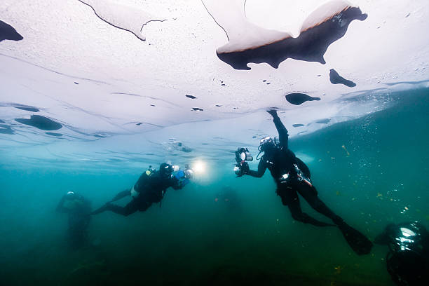
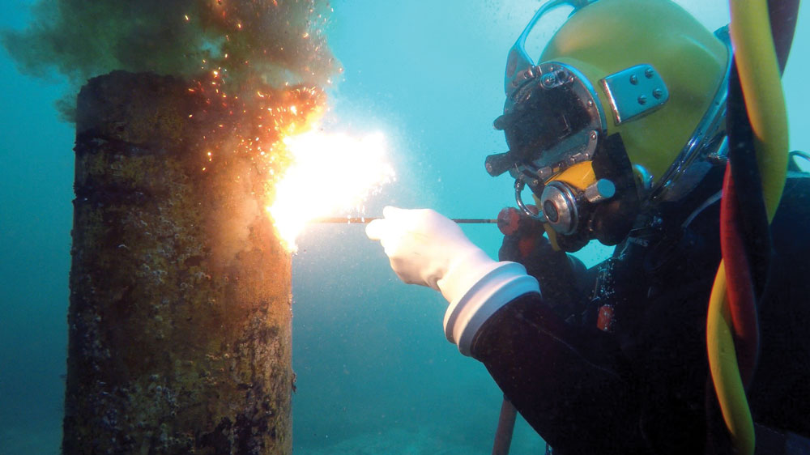
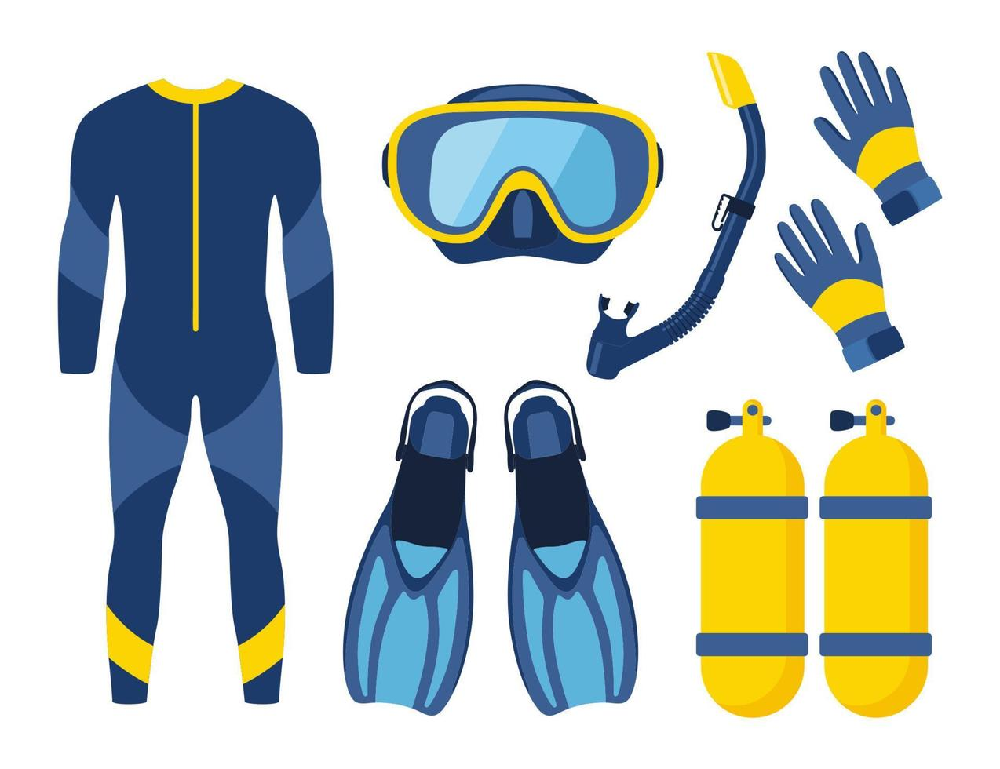

Bahaya Kimia
Gas-gas berbahaya seperti oksida nitrogen dan karbon monoksida dapat terlepas saat proses pengelasan di bawah laut. Paparan yang berlebihan dapat merusak kesehatan penyelam dan lingkungan sekitar.

Polusi Laut
Pengelasan bawah laut dapat menghasilkan limbah logam dan bahan kimia yang mencemari ekosistem laut, mengancam kehidupan laut seperti ikan dan terumbu karang.

Edukasi Keamanan
Penting untuk memberikan pelatihan kepada para penyelam dan pekerja tentang penggunaan alat pelindung diri (APD) dan teknik pengelasan yang aman untuk mengurangi risiko bahaya.